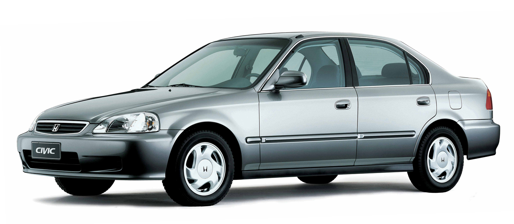

Honda Civic ano (1999)

Exemplo de modelo 1999
No ano de 1999 vamos falar um pouco sobre o carro Honda Civic modelo 1999. O Honda Civic 1999 foi um modelo muito popular no Brasil. O carro tinha um motor de 1.6 litros e 16 válvulas, que produzia 106 cavalos de potência. O modelo também foi um dos primeiros carros a ter airbags no Brasil1. O preço médio do modelo em 1999 era de R$ 14.3081. O Honda Civic 1999 Sedan LX 1.6 16V tinha uma velocidade máxima de 180 km/h e podia acelerar de 0 a 100 km/h em 11,3 segundos1. O carro tinha um design moderno e atraente, com suspensões independentes, barras de proteção laterais, direção hidráulica e versões de topo com controle de cruzeiro, freios ABS e airbags frontais23. O modelo era vendido em cinco configurações, de R$ 25.950 a R$ 35.7002.
Além dessas características, o Honda Civic tem uma história interessante. O modelo foi lançado em 1972 como um hatch compacto e econômico, que chegou em um momento oportuno devido à crise do petróleo que teve nessa época. Desde então, o Civic cresceu e passou por muitas mudanças, tornando-se um carro médio e tendo o Fit ocupado a vaga de compacto da marca. O Civic é o carro mais importante para a Honda a nível global e colecionou histórias nesses 50 anos de produção do modelo. O modelo já foi fabricado pela Mercedes-Benz na África do Sul, rebatizado como Ballade. O primeiro Honda feito na África do Sul foi o Civic de quarta geração, com a versão AMG no topo da gama do Ballade, com motor mais forte, interior mais luxuoso e acerto esportivo. O Civic também teve uma versão VX que possuía médias de consumo de combustível que carros diesel e híbridos modernos não superam.